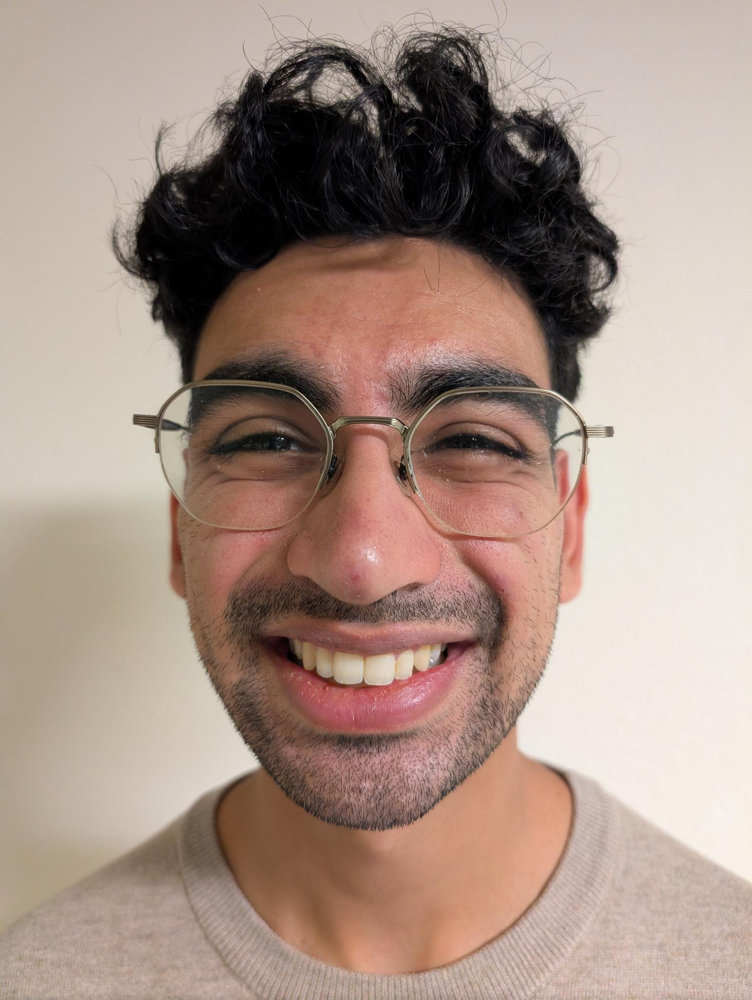
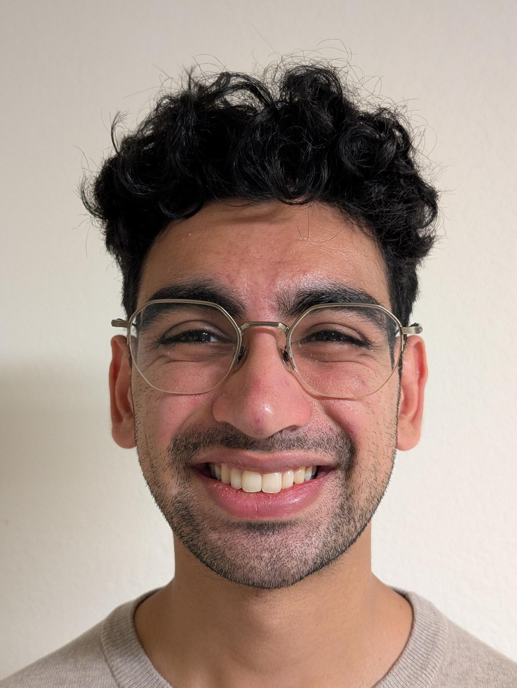
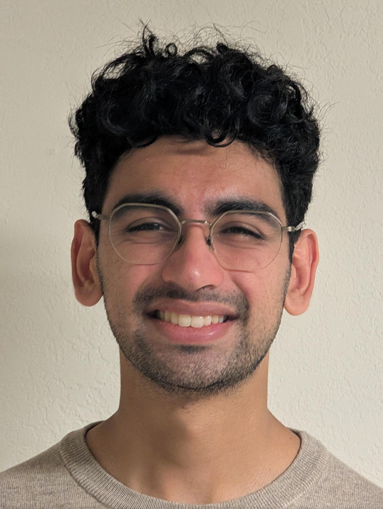
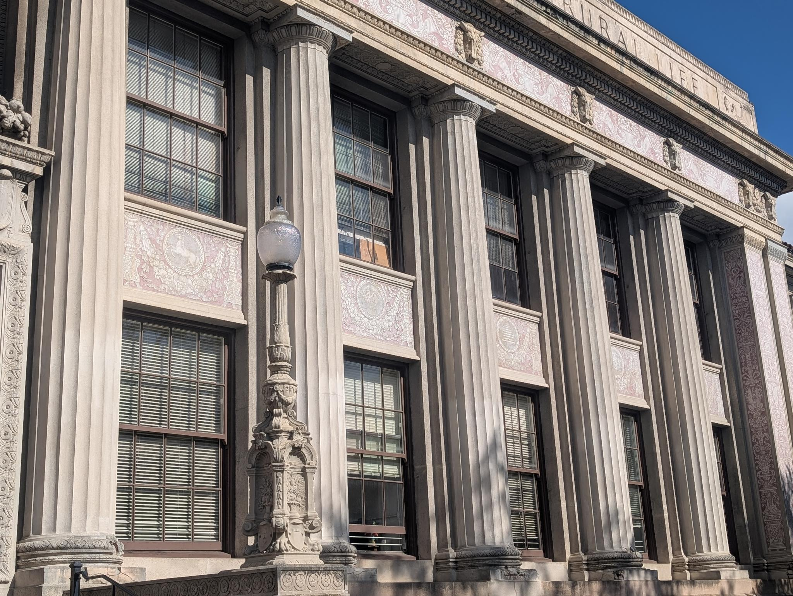
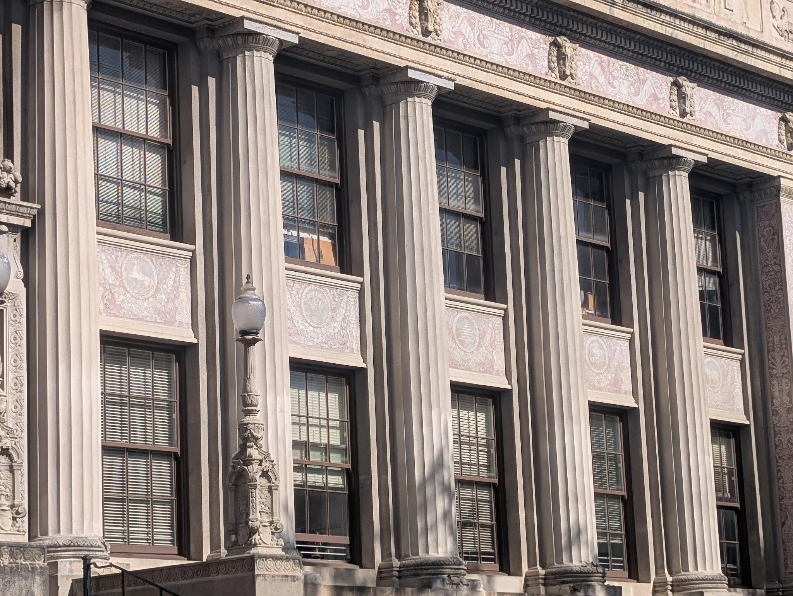
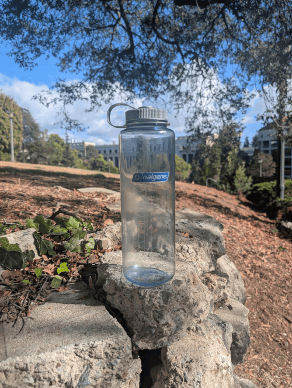

<title>Project 0: Becoming Friends with Your Camera</title>
<link rel="stylesheet" href="../style.css">

<main>
  <a class="back-link" href="../index.html">&larr; Back to all projects</a>

  <h1>Project 0: Becoming Friends with Your Camera</h1>

  <section class="part" id="part1">
    <h2>Part 1: Selfie: The Wrong Way vs. The Right Way</h2>
    <div class="image-row">
      
      
      
      
      
    </div>
    <div class="description">
      <p>The first picture (where the camera is much closer to my face) looks worse than the others (where the camera is successively farther away) because of the camera's perspective. When the camera is closer, my ears are proportionally much further away from the camera than the rest of my face. So, the ears look like they "fall away" from the rest of my face more. Also, other aspects of my face, like my nose and curly hair, look much more accentuated. In the other photos, the relative differences in distance between my ears, nose, etc. are much smaller, so my face looks flatter and less accentuated. This makes a better-looking portrait.</p>
    </div>
  </section>

  <section class="part" id="part2">
    <h2>Part 2: Architectural Perspective Compression</h2>
    <div class="image-row row-wide">
      
      
    </div>
    <div class="description">
      <p>The first picture (where I'm taking the picture closer to the facade) looks less compressed because of the camera's sense of relative distance, just like with part 1. You can see this because of the slightly steeper slant of the top of the facade, and the sharper fall-off from pillar to pillar. Also, the angle of each window changes more sharply.</p>
    </div>
  </section>

  <section class="part" id="part3">
    <h2>Part 3: The Dolly Zoom</h2>
    <div class="image-row">
      
    </div>
    <div class="description">
      <p>We can understand why the background "zooms" while the Nalgene stays the same size throughout the dolly zoom because of the camera's geometry. As the camera gets closer to the Nalgene, the angle of rays that interact between the camera, the Nalgene, and the background increases. So, the amount of the background that you can see with the same camera becomes larger (and vice versa as the camera gets farther).</p>
    </div>
  </section>

  <footer>
    <p><a href="../index.html">&larr; Back to all projects</a></p>
  </footer>
</main>
